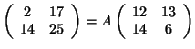
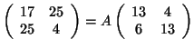
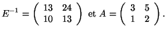

Comment casser le chiffre de Hill?
Avant de lire cette page, il faut avoir lu la description du chiffre de Hill, ainsi que l'exposé plus mathématique sur ce chiffre.
L'attaque des bigrammes
Même si le chiffre de Hill est un chiffre de substitution polygraphique,
il peut être cassé par une analyse des fréquences. Prenons l'exemple d'un chiffre de Hill où l'on chiffre des couples
de lettres simultanément (des bigrammes). Ces bigrammes seront toujours chiffrés de la même façon, quelle que soit leur position dans le texte.
Et bien sûr, tous les bigrammes n'ont pas la même fréquence dans la langue française. Les plus répandus sont ES,LE,RE,…, bien plus que WK, YH ou QR!
Ainsi, pour peu que l'on ne chiffre que des petits blocs de lettre (et, pour les usages de Hill, sans ordinateur, il était bien difficile de chiffrer
plus que des couples ou des triplets de lettres simultanément), une analyse statistique un peu poussée vient à bout d'un texte assez long.
L'attaque à clair connu
Lorsque l'on cherche à déterminer la clé de chiffrement d'un adversaire, on peut se situer à plusieurs niveaux d'information. On peut n'avoir à sa disposition que le message chiffré. Parfois, et cela apporte beaucoup d'informations, on dispose à la fois du message chiffré et de sa traduction en clair, ou au moins une partie de celle-ci. Cela n'est pas si saugrenu : bien des messages protocolaires (et dans l'armée, les protocoles...) comportent le même début ou la même fin, et c'est ainsi par exemple que Türing a procédé pour la machine Enigma. C'est ce que l'on appelle l'attaque à texte clair connu!
Voyons un exemple à partir du chiffrement de Hill (cette méthode s'applique à tout algorithme fonctionnant à partir de combinaisons linéaires). On suppose qu'on a le texte codé suivant : COR ZZETMDW...., qui correspond au début de MON GENERAL... Un espion dans les bases ennemies nous a permis de savoir que nos adversaires utilisent le chiffre de Hill, avec une longueur de clé égale à 2. On note A la matrice 2×2 de chiffrement à coefficients dans $\mathbb Z/26\mathbb Z$. La première paire CO s'obtient en appliquant la matrice A à partir de la paire MO, la seconde paire RZ s'obtient en appliquant la matrice A à partir de la paire NG. Cela se traduit matriciellement par la relation :

que nous écrivons sous la forme B=AC. Si la matrice C est inversible dans $\mathbb Z/26\mathbb Z$, on obtient en multipliant à droite A=BC-1. On s'empresse de calculer le déterminant de C : il vaut -110, qui n'est pas premier avec 26. C n'est pas inversible dans $\mathbb Z/26\mathbb Z$. C'est raté! On recommence avec les deuxième et troisième paires :

qu'on écrit en D=AE. Le déterminant de E vaut 145, il est premier avec 26, et E est inversible dans $\mathbb Z/26\mathbb Z$. On obtient alors :

On peut vérifier la matrice de chiffrement sur les autres paires. Ayant retrouvé la matrice de chiffrement, on retrouve très facilement le texte clair.
Consulter aussi